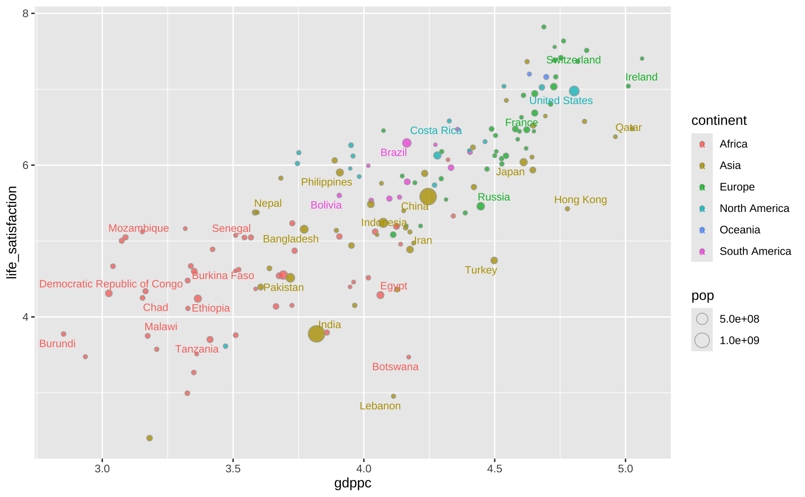
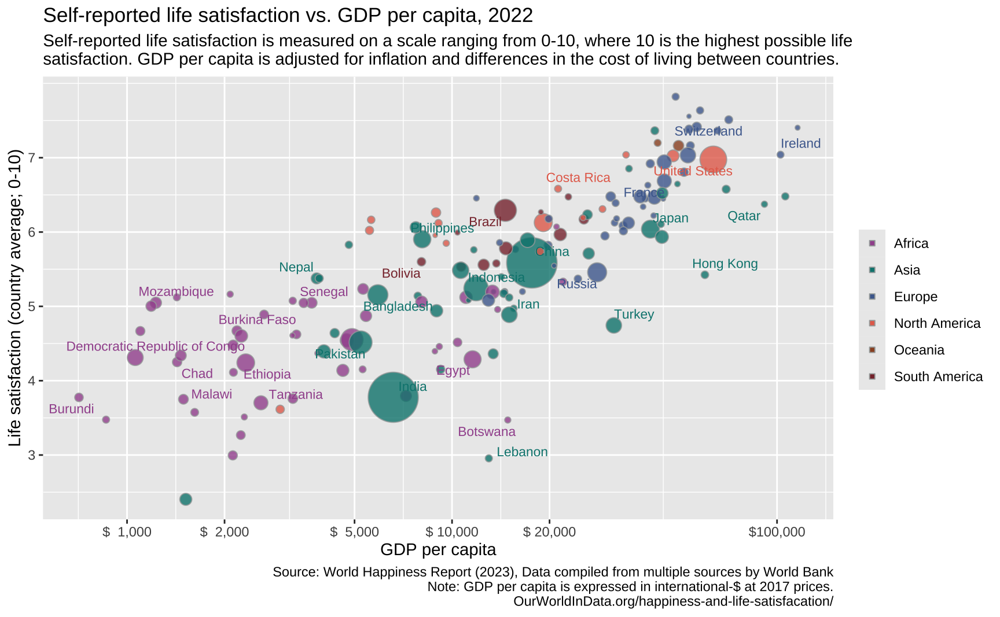
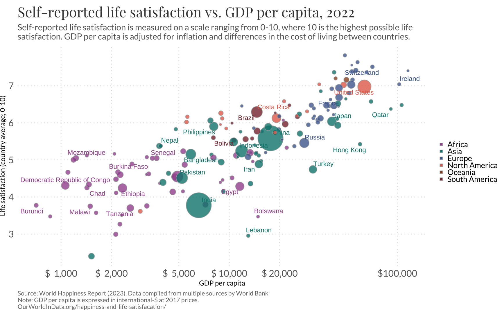

#> Packages needed to replicate the code
library(ggplot2)
library(ggrepel)
library(showtext)
library(readr)
library(dplyr)
library(janitor)Replicating the plot
In this tutorial post I will replicate this graph, from OurWorldInData (OWID) using ggplot2. The original graph is available at OWID website. The plot shows the correlation between GDP per capita and self-reported happiness. The income data comes from the World Bank and is in 2017 constant PPP dollars: this ensures the data is comparable across countries since it accounts for both inflation and different costs of living. The happiness data comes from the World Happiness Report.

This plot has several attractive features including how colors are used to represent continents and how size is used to show the population of each country.
To follow this tutorial make sure all of the packages below are installed.
The Data
The first step is acquiring the data. Luckily, the csv data is readily available at the OWID website. For convenience I stored a smaller version of the dataset in my Github. The code below imports the data directly into the R session.
owid <- readr::read_csv(
"https://github.com/viniciusoike/restateinsight/raw/main/static/data/gdp-vs-happiness.csv"
)The data shows both the GDP per capita and the Happiness Indicator for several countries across many years. The code below selects only the most recent that is available for each country.
Code
dat <- owid |>
janitor::clean_names() |>
rename(
life_satisfaction = cantril_ladder_score,
gdppc = gdp_per_capita_ppp_constant_2017_international,
pop = population_historical_estimates
) |>
filter(!is.na(gdppc), !is.na(life_satisfaction)) |>
mutate(gdppc = log10(gdppc)) |>
group_by(entity) |>
filter(year == max(year)) |>
ungroup() |>
select(entity, pop, gdppc, life_satisfaction)
dim_continent <- owid |>
select(entity, continent) |>
filter(!is.na(continent), !is.na(entity)) |>
distinct()
dat <- left_join(dat, dim_continent, by = "entity")The Plot
Bubbles
The most essential aspect of this plot is summarized in the code below. The plot shows each country as bubble, where the size of the bubble is proportional to its population. The position of each bubble shows the country’s GDP per capita (on the horizontal axis) and average life satisfaction (on the vertical axis). Finally, the color of each bubble corresponds to the continent of the country. Since many of the observations overlap the original plot uses a bit of transparency.
Note that I use shape = 21 to get a special circle with two colors. The color argument controls the circle’s border while the fill argument controls the circle’s interior color.
ggplot(dat, aes(x = gdppc, y = life_satisfaction)) +
geom_point(
aes(fill = continent, size = pop),
color = "#A5A9A9",
alpha = 0.8,
shape = 21
)Highlighting the countries
This part is mostly manual labor. I create a simple vector with the names of all countries highlighted in the original plot. This vector allows me to create a dummy variable that indicates whether the name of the country should be plotted or not. For increased flexibility I store this as an auxiliar tibble called dftext. In the end, this didn’t make much of a difference but it can be helpful in cases where one needs finer control over the text that is plotted.
I ggrepel to avoid overlapping the text labels.
#> Countries to highlight
sel_countries <- c(
"Ireland", "Qatar", "Hong Kong", "Switzerland", "United States", "France",
"Japan", "Costa Rica", "Russia", "Turkey", "China", "Brazil", "Indonesia",
"Iran", "Egypt", "Botswana", "Lebanon", "Philippines", "Bolivia", "Pakistan",
"Bangladesh", "Nepal", "Senegal", "Burkina Faso", "Ethiopia", "Tanzania",
"Democratic Republic of Congo", "Mozambique", " Somalia", "Chad", "Malawi",
"Burundi", "India")
#> Auxiliar tibble with names of countries to highlight
dftext <- dat |>
mutate(highlight = if_else(entity %in% sel_countries, entity, NA))
#> Creates a base plot with the bubbles plus the text labels
base_plot <- ggplot(dat, aes(x = gdppc, y = life_satisfaction)) +
geom_point(
aes(fill = continent, size = pop),
color = "#A5A9A9",
alpha = 0.8,
shape = 21
) +
ggrepel::geom_text_repel(
data = dftext,
aes(x = gdppc, y = life_satisfaction, label = highlight, color = continent),
size = 3
)
base_plot
Scales and colors
The x-axis of the original plot is in a logarithmic scale and its labels highlight specific values (1000, 2000, 5000, …, 100000). The numbers are formatted with a comma and dollar sign. The y-axis is much more straightforward since the numbers are simple integers ranging from 3 to 7.
The default size of the bubbles in ggplot is small so I use scale_size_continuous to increase them. I have no idea how to emulate the original size legend (the circle within a circle) so I omit it.
Both the interior color of the bubbles and the text follow a particular color scheme. I got the exact colors of the original plot by exporting it to SVG. By default, the legend key inherits its colors. So the legend shows slightly transparent round circles. To get solid colored squares I override this default behavior.
xbreaks <- c(3, 3.3, 3.7, 4, 4.3, 5)
xlabels <- c(1000, 2000, 5000, 10000, 20000, 100000)
xlabels <- paste0("$", format(xlabels, big.mark = ",", scientific = FALSE))
colors <- c("#A2559C", "#00847E", "#4C6A9C", "#E56E5A", "#9A5129", "#883039")
base_plot <- base_plot +
#> Adds labels to the log scale
scale_x_continuous(breaks = xbreaks, labels = xlabels) +
#> Adds labels to the y-axis scale
scale_y_continuous(breaks = 3:7) +
#> Increases the size of the bubbles
scale_size_continuous(range = c(1, 15)) +
#> Adds colors to the bubbles and text labels
scale_fill_manual(name = "", values = colors) +
scale_color_manual(name = "", values = colors) +
#> Removes the size and color legend
guides(
color = "none",
size = "none",
#> Override default behaviour to get solid colors
fill = guide_legend(override.aes = list(shape = 22, alpha = 1))
)
base_plotText elements
The code below inserts the other textual elements of the plot.
#> Caption
caption <- "Source: World Happiness Report (2023), Data compiled from multiple sources by World Bank\nNote: GDP per capita is expressed in international-$ at 2017 prices.\nOurWorldInData.org/happiness-and-life-satisfacation/"
#> Subtitle
subtitle <- "Self-reported life satisfaction is measured on a scale ranging from 0-10, where 10 is the highest possible life\nsatisfaction. GDP per capita is adjusted for inflation and differences in the cost of living between countries."
#> Adds textual elements to base plot
base_plot <- base_plot +
labs(
title = "Self-reported life satisfaction vs. GDP per capita, 2022",
subtitle = subtitle,
x = "GDP per capita",
y = "Life satisfaction (country average; 0-10)",
caption = caption
)
base_plot
Font
Looking at the source code of the page it seems that most of the text is displayed in Lato while the titles are displayed in Playfair Display. I import both fonts using font_add_google and load them using showtext.
font_add_google("Playfair Display", "Playfair Display")
font_add_google("Lato", "Lato")
showtext::showtext_auto()Theme
This step really does the magic.
For the theme, I use theme_minimal as a template, since its fairly similar to the OWID graphic. I start by removing the minor panel grids from the background and changing the major panel grids. Then, I alter the textual elements of the graphic and make minor tweaks to the legend and plot margins.
All of the text is in different shades of gray with exception of the title, the axis titles, and the legend text which are all in plain black. Figuring out the sizes of the text is mostly a trial and error process. Almost all of the text is small except the main title and the text on the axes.
base_plot +
theme_minimal() +
theme(
#> Background grid
panel.grid.minor = element_blank(),
panel.grid.major = element_line(linetype = 3, color = "#DDDDDD"),
#> Text elements (change font)
text = element_text(family = "Lato"),
title = element_text(family = "Lato"),
#> Caption, title, and subtitle
plot.caption = element_text(color = "#777777", hjust = 0, size = 8),
plot.title = element_text(
color = "#444444",
family = "Playfair Display",
size = 18),
plot.subtitle = element_text(color = "#666666", size = 11),
#> Axis text
axis.title = element_text(color = "#000000", size = 9),
axis.text = element_text(color = "#666666", size = 12),
#> Legend
legend.key.size = unit(5, "pt"),
legend.position = "right",
legend.text = element_text(size = 10),
#> Margin
plot.margin = margin(rep(10, 4))
)
Final result
The graphic below is the final version. For convenience I collect all of the code needed to reproduce this graphic into two chunks. I also change geom_text_repel for geom_label_repel to insert a small white background on the names of the countries to improve readability.
Code
#> Theme
theme_owid <- theme_minimal() +
theme(
panel.grid.minor = element_blank(),
panel.grid.major = element_line(linetype = 3, color = "#DDDDDD"),
text = element_text(family = "Lato"),
title = element_text(family = "Lato"),
plot.caption = element_text(color = "#777777", hjust = 0, size = 8),
plot.title = element_text(
color = "#444444",
family = "Playfair Display",
size = 18),
plot.subtitle = element_text(color = "#666666", size = 11),
axis.title = element_text(color = "#000000", size = 9),
axis.text = element_text(color = "#666666", size = 12),
legend.key.size = unit(5, "pt"),
legend.position = "right",
legend.text = element_text(size = 10),
plot.margin = margin(rep(10, 4))
)
#> Countries to highlight
sel_countries <- c(
"Ireland", "Qatar", "Hong Kong", "Switzerland", "United States", "France",
"Japan", "Costa Rica", "Russia", "Turkey", "China", "Brazil", "Indonesia",
"Iran", "Egypt", "Botswana", "Lebanon", "Philippines", "Bolivia", "Pakistan",
"Bangladesh", "Nepal", "Senegal", "Burkina Faso", "Ethiopia", "Tanzania",
"Democratic Republic of Congo", "Mozambique", " Somalia", "Chad", "Malawi",
"Burundi", "India")
dftext <- dat |>
mutate(highlight = if_else(entity %in% sel_countries, entity, NA))
#> x-axis labels
xbreaks <- c(3, 3.3, 3.7, 4, 4.3, 5)
xlabels <- c(1000, 2000, 5000, 10000, 20000, 100000)
xlabels <- paste0("$", format(xlabels, big.mark = ",", scientific = FALSE))
#> Colors
colors <- c("#A2559C", "#00847E", "#4C6A9C", "#E56E5A", "#9A5129", "#883039")Code
ggplot(dat, aes(x = gdppc, y = life_satisfaction)) +
geom_point(
aes(fill = continent, size = pop),
color = "#A5A9A9",
alpha = 0.8,
shape = 21
) +
ggrepel::geom_label_repel(
data = dftext,
aes(x = gdppc, y = life_satisfaction, label = highlight, color = continent),
size = 3,
force = 5,
family = "Lato",
label.padding = unit(0.05, "lines"),
label.size = NA
) +
scale_x_continuous(breaks = xbreaks, labels = xlabels) +
scale_y_continuous(breaks = 3:7) +
scale_size_continuous(range = c(1, 15)) +
scale_fill_manual(name = "", values = colors) +
scale_color_manual(name = "", values = colors) +
guides(
color = "none",
size = "none",
fill = guide_legend(override.aes = list(shape = 22, alpha = 1))
) +
labs(
title = "Self-reported life satisfaction vs. GDP per capita, 2022",
subtitle = subtitle,
x = "GDP per capita",
y = "Life satisfaction (country average; 0-10)",
caption = caption
) +
theme_owid